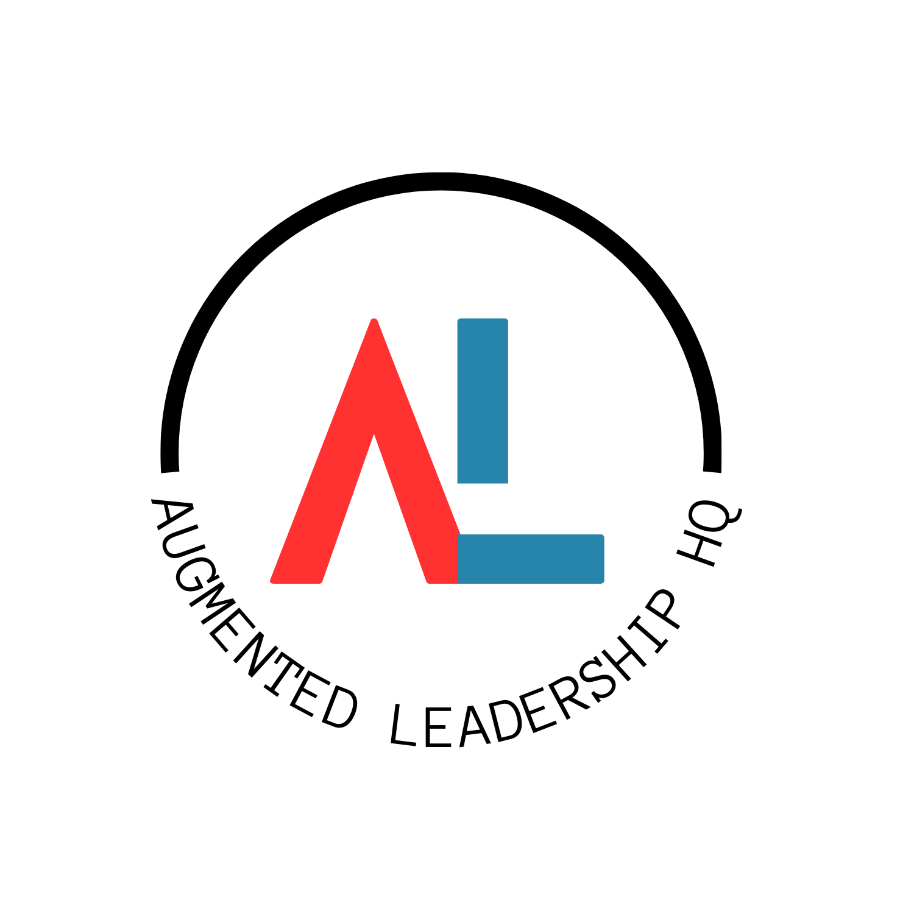

Issue archive
The executive brief on AI in healthcare operations. Published by Augmented Leadership HQ.
Get the brief in your inbox
The executive brief on AI in healthcare operations. Every other week.
Subscribe free
Healthcare AI Ops & Oversight
The executive brief on AI in healthcare operations.
The executive brief on AI in healthcare operations. Published by Augmented Leadership HQ.
The executive brief on AI in healthcare operations. Every other week.
Subscribe free